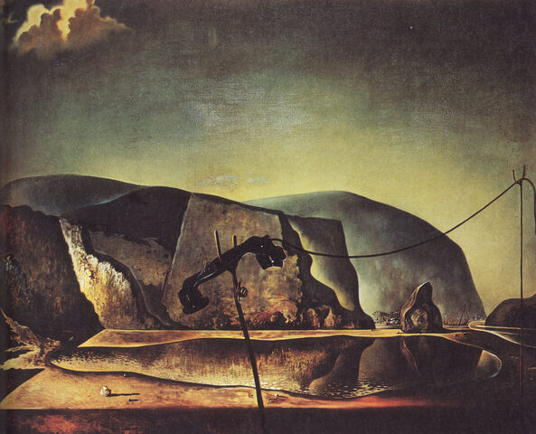

Salvador Dali,1904 - 1989,Surrealism,Spanish,"Salvador Domingo Felipe Jacinto Dalí i Domènech, 1st Marquis of Dalí de Púbol (11 May 1904 – 23 January 1989), known professionally as Salvador Dalí (; Catalan: [səlβəˈðo ðəˈli]; Spanish: [salβaˈðoɾ ðaˈli]), was a prominent Spanish surrealist born in Figueres, Catalonia, Spain.",http://en.wikipedia.org/wiki/Salvador_Dalí,139
